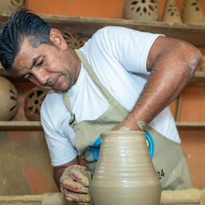
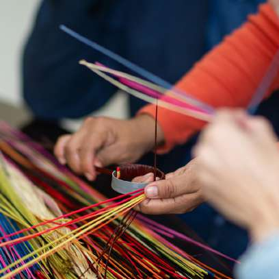
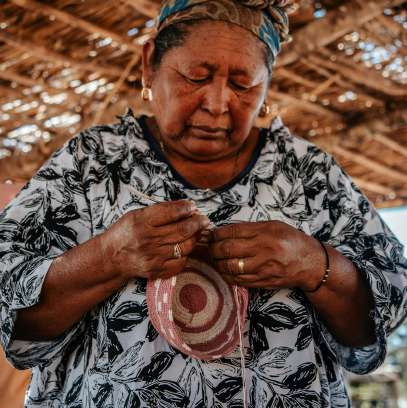
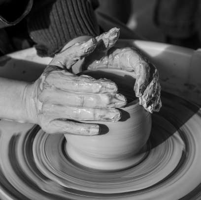
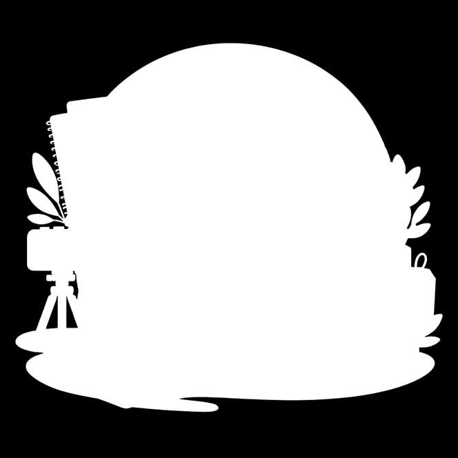
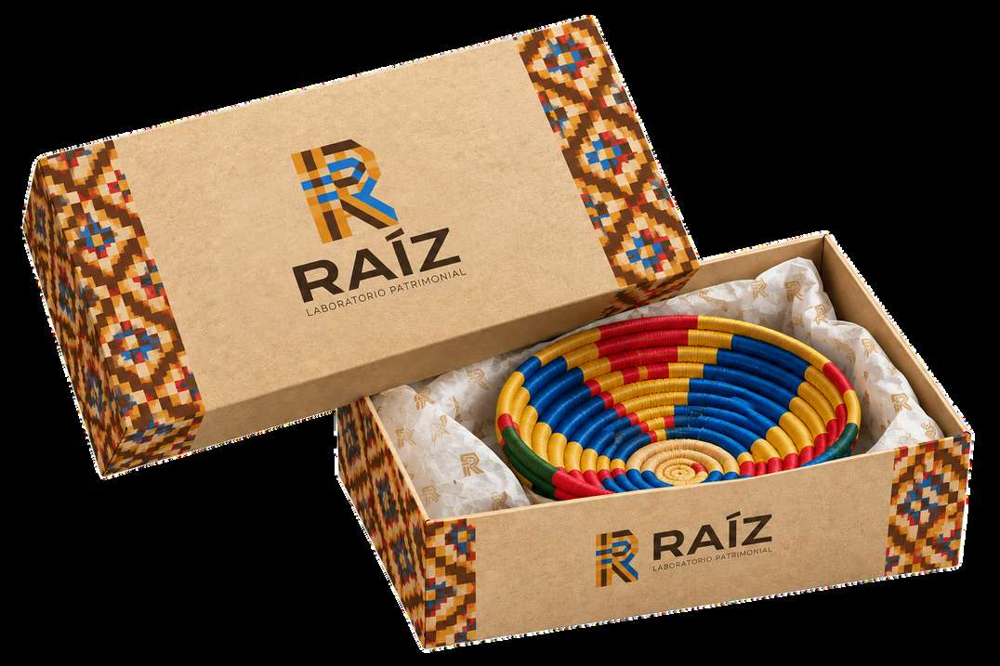

01
Fase Inicial
01. Documentación
Registramos la historia del artesano y su oficio mediante fotografía, video y relatos.

Acompañamos al artesano desde la documentación de su historia hasta la construcción de una marca y su presencia digital, mediante un proceso de co-creación, capacitación y seguimiento.
Registramos la historia del artesano y su oficio mediante fotografía, video y relatos.

Construimos el sistema visual de la marca: logotipo, colores, tipografía y elementos gráficos.

Diseñamos empaques funcionales que protegen el producto y comunican su historia.

Planteamos una micro-marca con catálogo y herramientas digitales para facilitar la venta directa.
Propuesta estratégica del laboratorio patrimonial
Ofrecemos capacitación básica para gestionar pedidos, redes sociales y la tienda digital.

Cada proceso culmina en un conjunto coherente de activos conceptuales, visuales y formativos diseñados para dotar al oficio de autonomía y presencia en el entorno contemporáneo.
Piezas audiovisuales y archivo fotográfico en alta resolución que documentan el origen, las manos, las herramientas y la cotidianidad del oficio.
Publicación estructurada con la memoria cultural de las piezas, fichas descriptivas del proceso y relatos de la comunidad artesana.
Manual con logotipo, isotipo, paleta cromática propia, pautas tipográficas y retículas modulares inspiradas en la trama del oficio.
Estructuras en cartón kraft, fajas de patrón textil, etiquetas colgantes de trazabilidad y tarjetas con notas de agradecimiento.
Estructura tecnológica y catálogo digital para habilitar la exposición directa de las piezas sin intermediación innecesaria.
Talleres prácticos de alfabetización digital para el artesano: atención de pedidos, comunicación en redes y gestión elemental del canal.
En RAÍZ, el artesano participa en la construcción de una marca que representa su oficio y su historia. El proceso se basa en la co-creación, el acompañamiento, la capacitación y el seguimiento posterior al lanzamiento.
La comercialización debe preservar el vínculo con el origen y permitir que los artesanos mantengan el control de su historia.
